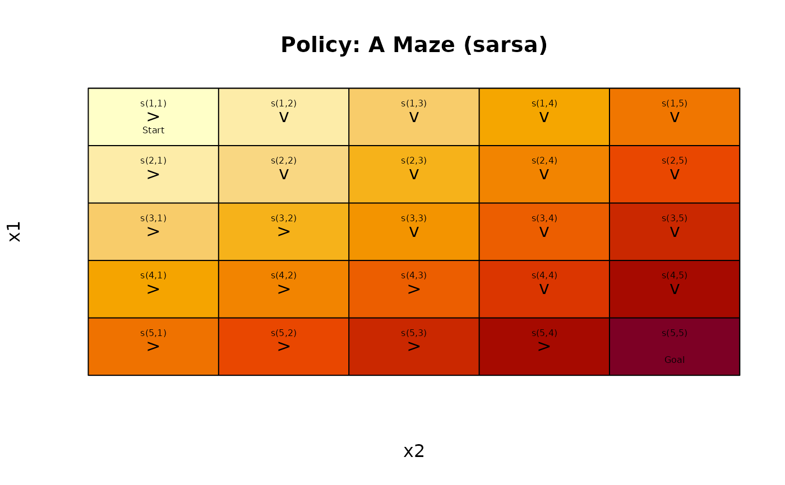

Defines a discrete-time Markov decision process with only sample access as a transition function between states using a factored state representation. The state space may be continuous and infinite.
Usage
MDPSample(
actions,
transition_model,
start,
states = NULL,
absorbing_states = NULL,
discount = 0.9,
horizon = Inf,
info = NULL,
name = NA
)Arguments
- actions
a character vector specifying the names of the available actions.
- transition_model
A transition function receiving the current state features and returning the reward and the next state features.
- start
Specifies in which state the MDP starts.
- states
Optional state labels.
- absorbing_states
a single state or a list with absorbing states.
- discount
numeric; discount rate between 0 and 1.
- horizon
numeric; Number of epochs.
- info
A list with additional information.
- name
a string to identify the MDP problem.
Details
Defines a Markov decision process as a transition function between state represented as feature vectors (i.e., using a factored state representation). The state space may be
finite and discrete and specified in the problem,
finite and discrete but not specified in the problem,
continuous (implying infinite and not specified in the problem).
Compared to the specification in class MDP, no transition probabilities are
available. Instead of the reward function, reward is only returned from
calls to the transition function via act(). The state space may be specified.
To represent states, a factored state representation as a row vector for a single
state or a matrix with row vectors for a set of states are used. State labels
can be constructed in the form s(feature1, feature2, ...). Conversion between the factored
representation and state labels is available in state2features()
and features2state(). Since the state set is not directly represented,
state ids cannot be used!
Reinforcement learning algorithms with approximation can be used to solve
these problems. See: solve_MDP_APPROX().
See also
Other MDPSample:
absorbing_states(),
act(),
action_state_helpers,
reachable_states(),
sample_MDP.MDPSample(),
solve_MDP_PG(),
start
Examples
# Example 1: Define a simple 5x5 maze without walls
transition_model <- function(model, action, state) {
# make sure action and state are in the correct format
action <- normalize_action_label(action, model)
state <- normalize_state_features(state, model)
if (all(state == s(5, 5)))
return(list(reward = 0, state_prime = state))
sp <- state + switch(action,
up = c( -1, 0),
down = c( +1, 0),
left = c( 0,-1),
right = c( 0,+1)
)
r <- -1
# check bounds
if (any(sp < 1) || any(sp > 5)) {
sp <- state
}
# goal
if (all(sp == s(5, 5)))
r <- 100
return(list(reward = r, state_prime = sp))
}
m <- MDPSample(actions = c("up", "right", "down", "left"),
transition_model,
start = s(1,1),
absorbing_states = s(5, 5),
name = "5x5 Maze")
m
#> MDPSample, MDP - 5x5 Maze
#> Discount factor: 0.9
#> Horizon: Inf epochs
#> Size: 4 actions / undefined state space
#> Start: s(1,1)
#> List components: ‘name’, ‘discount’, ‘horizon’, ‘actions’, ‘states’,
#> ‘start’, ‘absorbing_states’, ‘transition_model’, ‘info’
act(m, s(1,1), "down")
#> $reward
#> [1] -1
#>
#> $state_prime
#> x1 x2
#> [1,] 2 1
#>
# Reach the goal: reward = 100
act(m, s(5,4), "right")
#> $reward
#> [1] 100
#>
#> $state_prime
#> x1 x2
#> [1,] 5 5
#>
# Illegal action: no movement and reward = -1
act(m, s(1,1), "up")
#> $reward
#> [1] -1
#>
#> $state_prime
#> x1 x2
#> [1,] 1 1
#>
# Absorbing state: no movement and 0 reward
act(m, s(5,5), "up")
#> $reward
#> [1] 0
#>
#> $state_prime
#> x1 x2
#> [1,] 5 5
#>
# Example 2: Solve using Linear Feature Approximation
# Note that we have not specified the state space
m
#> MDPSample, MDP - 5x5 Maze
#> Discount factor: 0.9
#> Horizon: Inf epochs
#> Size: 4 actions / undefined state space
#> Start: s(1,1)
#> List components: ‘name’, ‘discount’, ‘horizon’, ‘actions’, ‘states’,
#> ‘start’, ‘absorbing_states’, ‘transition_model’, ‘info’
S(m)
#> NULL
# To use value function approximation, we need to specify the minimum
# and maximum of each state feature for scaling them to [0,1]. The rows
# and column indices used are between 0 and 5.
set.seed(1000)
sol <- solve_MDP_APPROX(m, horizon = 1000, n = 100,
alpha = 0.01, epsilon = 0.55,
transformation = transformation_linear_basis,
min = c(0, 0), max = c(5, 5),
verbose = FALSE)
# we can calculate the approximate q-values, but have to specify the states.
approx_Q_value(sol, state = rbind(s(1,2), s(4,5)))
#> up right down left
#> [1,] 12.99841 17.82052 17.37264 12.43688
#> [2,] 20.61977 36.13659 34.90891 19.84653
# Note: since there is no explicit state space, we also do not have a
# precalculated policy! We can get approx. greedy actions.
approx_greedy_action(sol, state = s(4,5))
#> [1] right
#> Levels: up right down left
# Example 3: MDPSample with a specified state space
# The same maze as above can be created with this gridworld helper.
# It specifies the finite state space.
m <- gw_maze_MDP(dim = c(5,5), start = "s(1,1)", goal = "s(5,5)", access = "sample")
m
#> MDPSample, MDP - A Maze
#> Discount factor: 1
#> Horizon: Inf epochs
#> Size: 4 actions / 25 states
#> Start: s(1,1)
#> List components: ‘name’, ‘discount’, ‘horizon’, ‘actions’, ‘states’,
#> ‘start’, ‘absorbing_states’, ‘transition_model’, ‘info’
S(m)
#> [1] "s(1,1)" "s(2,1)" "s(3,1)" "s(4,1)" "s(5,1)" "s(1,2)" "s(2,2)" "s(3,2)"
#> [9] "s(4,2)" "s(5,2)" "s(1,3)" "s(2,3)" "s(3,3)" "s(4,3)" "s(5,3)" "s(1,4)"
#> [17] "s(2,4)" "s(3,4)" "s(4,4)" "s(5,4)" "s(1,5)" "s(2,5)" "s(3,5)" "s(4,5)"
#> [25] "s(5,5)"
# With the defined state space, we do not need to supply min and max
# for the transformation function.
set.seed(1000)
sol <- solve_MDP_APPROX(m, horizon = 1000, n = 100,
alpha = 0.01, epsilon = 0.55, verbose = FALSE)
# we can use several gridworld helper
gw_plot(sol)

gw_matrix(sol, what = "value")
#> [,1] [,2] [,3] [,4] [,5]
#> [1,] 18.35811 24.21770 30.14518 36.07267 42.00015
#> [2,] 24.37361 28.37248 34.29996 40.22745 46.15493
#> [3,] 30.38912 34.32785 38.45474 44.38222 50.30971
#> [4,] 36.40462 40.34335 44.28208 48.53700 54.46449
#> [5,] 42.42012 46.35885 50.29758 54.23631 58.61927
# and get a policy table
policy(sol)
#> state V action
#> 1 s(1,1) 18.35811 right
#> 2 s(2,1) 24.37361 right
#> 3 s(3,1) 30.38912 right
#> 4 s(4,1) 36.40462 right
#> 5 s(5,1) 42.42012 right
#> 6 s(1,2) 24.21770 down
#> 7 s(2,2) 28.37248 down
#> 8 s(3,2) 34.32785 right
#> 9 s(4,2) 40.34335 right
#> 10 s(5,2) 46.35885 right
#> 11 s(1,3) 30.14518 down
#> 12 s(2,3) 34.29996 down
#> 13 s(3,3) 38.45474 down
#> 14 s(4,3) 44.28208 right
#> 15 s(5,3) 50.29758 right
#> 16 s(1,4) 36.07267 down
#> 17 s(2,4) 40.22745 down
#> 18 s(3,4) 44.38222 down
#> 19 s(4,4) 48.53700 down
#> 20 s(5,4) 54.23631 right
#> 21 s(1,5) 42.00015 down
#> 22 s(2,5) 46.15493 down
#> 23 s(3,5) 50.30971 down
#> 24 s(4,5) 54.46449 down
#> 25 s(5,5) 58.61927 down